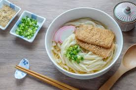
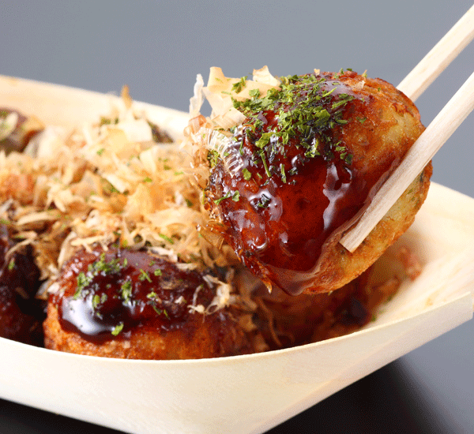
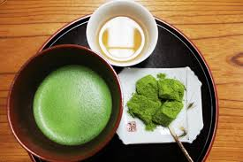
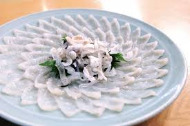
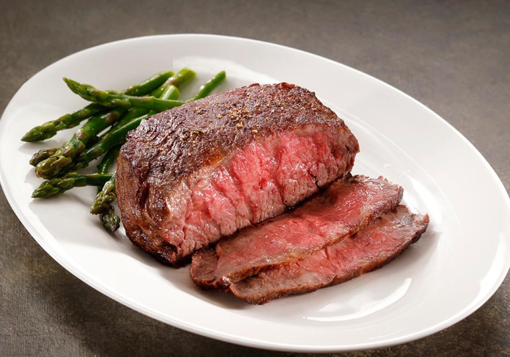

 Kitsune Udon is the most popular type of udon in Japan. It is famous for it’s fried tofu that is placed on top of the noodles. Kitsune Udon was created in Osaka during the Meiji period at the Matsubaya restaurant. Kansai is said to have the best Kitsune Udon because of the high-quality broth created from the natural resources available. This allows for light flavoring that lets the dish speak for itself.
 Tako Yaki was created by Tomekichi Endo, who was inspired by the akashiyaki, a small round dumpling. The TakoYaki is one of Kansai most popular foods because Endo invented it while living in Osaka. The TakoYaki is also famous for being a festival food of Japan and can be found during almost any omatsuri (festival).
 Uji has been known for its high-quality green tea dates back to the 11th century. During 700 A.D. green tea leaves were brought to Japan from China and then preserved by Shogun Ashikaga Yoshimitsu who promoted the cultivation of tea. One of the originally Uji Green Tea shops, Tsuen tea shop is still open today and ran by the 24th generation of the family.
 The Fugu is a pufferfish that is a staple of Kansai cuisine. Although poisonous, Japanese chefs have mastered removing its poisonous parts to prepare it for safe consumption. Flexible enough to be prepared as a cleanly sliced sashimi or a rich deep fried Fugu Kara-age, Fugu is one of Kansai oldest and most dear culinary traditions.
 As Japan remained isolated in its early history, its cattle were all of the same breed and rarely used for meat. This changed during the Meiji restoration as Japan was opened up to the world, and selectively bred foreign cattle with their own to produce “Improved Japanese Cattle.” These were the four wagyu beef breeds, the Japanese Black, the Japanese Brown, the Japanese Polled, and the Japanese Shorthorned. Japan started to market and export Kobe beef in 2012 to the rest of the world where it quickly gained worldwide recognition. However, many of the exports don’t stay true to the traditional Japanese Kobe beef in order to better appeal to western palates. The only way to experience the product in its unaltered form is to travel to Kobe and taste it yourself.